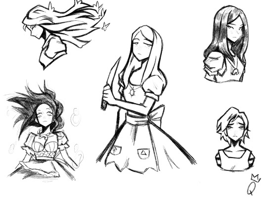

| La técnica sketch es un método de dibujo rápido y espontáneo que se utiliza para capturar ideas, conceptos o formas de manera sencilla y sin necesidad de realizar un trabajo detallado o perfeccionista. La palabra "sketch" proviene del inglés y significa "boceto" o "esbozo", lo que refleja su propósito principal: plasmar rápidamente una idea o una estructura básica que puede servir como base para una obra más compleja o simplemente como una práctica de dibujo. |
 |
Ventajas- ☆ Al no haber una presión por hacer un trabajo perfecto, el artista puede experimentar libremente con diferentes ideas, estilos y composiciones.
- ☆ Practicar sketching con regularidad ayuda a mejorar el control sobre los trazos y la percepción de formas y proporciones.
- ☆ El sketch permite plasmar rápidamente una idea o una imagen mental antes de que se pierda o se olvide.
- ☆ Se puede usar en cualquier contexto o medio (papel, lienzo, digital)
|